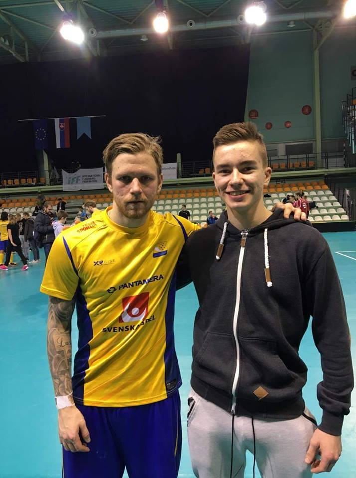

IBF Falun’s captain Rasmus Enström is once again found at the 3rd place. Formerly the best player in the world (2015), he’s taken a step back in the list the last couple of years to make room for his radar partner to Alexander Galante Carlström. The 28-year old has a world-class, if not the best technique in the world which he makes sure to utilize on the field. This season he became Falun’s best scorer at 63 points (28+35).IBF Falun’s captain Rasmus Enström is once again found at the 3rd place. Formerly the best player in the world (2015), he’s taken a step back in the list the last couple of years to make room for his radar partner to Alexander Galante Carlström. The 28-year old has a world-class, if not the best technique in the world which he makes sure to utilize on the field. This season he became Falun’s best scorer at 63 points (28+35).IBF Falun’s captain Rasmus Enström is once again found at the 3rd place. Formerly the best player in the world (2015), he’s taken a step back in the list the last couple of years to make room for his radar partner to Alexander Galante Carlström. The 28-year old has a world-class, if not the best technique in the world which he makes sure to utilize on the field. This season he became Falun’s best scorer at 63 points (28+35).IBF Falun’s captain Rasmus Enström is once again found at the 3rd place. Formerly the best player in the world (2015), he’s taken a step back in the list the last couple of years to make room for his radar partner to Alexander Galante Carlström. The 28-year old has a world-class, if not the best technique in the world which he makes sure to utilize on the field. This season he became Falun’s best scorer at 63 points (28+35).IBF Falun’s captain Rasmus Enström is once again found at the 3rd place. Formerly the best player in the world (2015), he’s taken a step back in the list the last couple of years to make room for his radar partner to Alexander Galante Carlström. The 28-year old has a world-class, if not the best technique in the world which he makes sure to utilize on the field. This season he became Falun’s best scorer at 63 points (28+35).
